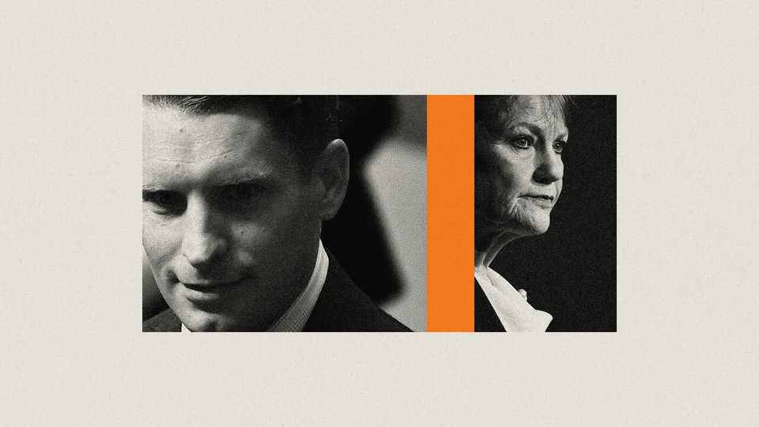
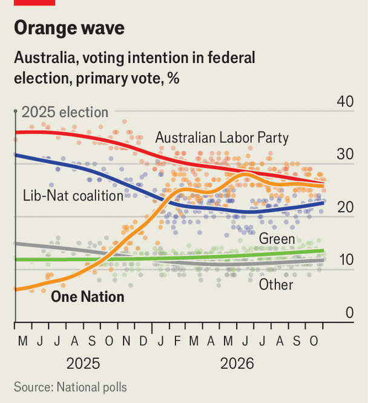

The fight for the soul of the Australian right
Can a special-forces veteran stop the rise of Pauline Hanson?

Nov 5th 2026
Senator pauline hanson swaggered into Secret Harbour on October 30th like a general inspecting troops in newly conquered territory. It was her first visit since One Nation, her ragtag populist party, won a by-election in the coastal town. The race for a seat in the Western Australia state parliament was the latest in an “orange wave” of wins for One Nation in elections this year. But Secret Harbour is special: the town sits inside the federal constituency of one of Ms Hanson’s most formidable opponents, the special-forces veteran and Liberal Party frontbencher Andrew Hastie.
Once dismissed as a gadfly, Ms Hanson is now a real force. In January One Nation overtook the Liberals in the polls and still has a lead. It is neck-and-neck with the governing Labor Party. It still lacks much of the scaffolding of a national organisation, but Ms Hanson has shown that she can turn voter anger at the major parties into seats. So her party has a real shot at replacing the Liberals as the official opposition at the next election in 2028, and an outside one at forming the next government.

The election in February of Angus Taylor as the Liberals’ new leader has not boosted the party’s fortunes. Mr Taylor, attacked by Ms Hanson as a “smarmy management consultant”, has mostly avoided confrontation with her. But Mr Hastie has taken her on directly. Some Liberals argue that, against her, he would be a stronger leader than Mr Taylor. “It was obvious that the better choice would have been Hastie,” says Malcolm Turnbull, a former prime minister and Liberal leader. “I’m sure he’ll lead the Liberal Party some day—if he doesn’t lose his seat.”
That Mr Hastie might face two such different futures is largely a consequence of one decision that he made: to testify against a fellow soldier accused of war crimes. That has led to an emotional debate on the right, one which Ms Hanson has been eager to use to her advantage. “I was subpoenaed, and then under oath required to tell the truth,” Mr Hastie tells The Economist. “Would you rather me be in contempt of court and lie?”
Wildly divergent answers to that question have this year been tearing the Australian right apart. Mr Hastie is now under attack from Ms Hanson and her powerful allies like Gina Rinehart, a mining magnate, and Kerry Stokes, a media baron, some of them once supporters of the Liberals. In July Ms Hanson published a video calling Mr Hastie a “traitor” and encouraging Liberals to abandon him. The strategy seems to be working. Tony Abbott, the president of the Liberal party and another former prime minister, has distanced himself from Mr Hastie. They are trying, he says, “to destroy me personally”. But the stakes for the Australian right are far higher than that.
The veteran of the elite Special Air Service regiment is an unlikely hate figure for the populist right. Mr Hastie has led a push over the past year to drag the Liberal Party to the right on issues that animate populists. His call for lower net migration is now party policy. He is against women in combat. Like many populists, he bemoans the demise of Australian manufacturing, arguing for a more active industrial policy. But he parts ways with them when it comes to the rule of law.
Mr Hastie links his stand against war crimes to his Christianity. He testified against a fellow soldier, he tells supporters, under an oath before God. He is more open about his faith than most Australian politicians: “I learned more about politics and leadership watching my father [a Presbyterian minister] at church than anywhere else.” But “I am not a Christian nationalist.” By contrast, Ms Hanson has called Australia a Christian country, yet dodged questions about her own beliefs.
The lessons from his father’s church sometimes point in unexpected directions. Mr Hastie opposes abortion and gay marriage, but rejects Ms Hanson’s call for a “monocultural” Australia. Worse yet, in his view, are her fans’ calls for racial criteria for immigrants. He recalls his father’s church in Ashfield, then one of Sydney’s most diverse suburbs, which held services in several Asian languages because “everyone is made in God’s image”. Immigrants, he says, should be chosen for their values and skills rather than their ethnicity.
That same philosophy has allowed Mr Hastie to make friends across the aisle. Take Senator Penny Wong, the foreign minister and a Labor stalwart. Ms Wong, gay and born in Malaysia, might seem an unlikely partner. But the two worked well together when Mr Hastie was a backbencher and Ms Wong was in opposition. “It’s always been clear to me…that he is one of the few on his side who believes there is a national interest above partisanship,” says Ms Wong. “While Andrew isn’t really where modern Australia is, he understands that you can’t out-Pauline Pauline.”
That hints at a potential way through for Mr Hastie. Once known as the Liberal Party’s rising right-winger, his fight with One Nation is broadening his appeal. He has no plans to give up his conservative bona fides, but he is seeking out new allies. Within his own party, once-critical moderate grandees like Mr Turnbull now offer cautious praise. At a fundraiser last month 80% of participants were new donors. And he has become a more frequent guest on public television and radio shows, whose viewers tend to skew centre-left. That could leave him in a stronger position to lead the Liberal Party in the future.
But first he must see off Ms Hanson’s campaign to brand him among the conservative base as a traitor. He still looks to be under siege. The home-affairs minister has cited unspecified threats in advising police to upgrade security at his home and office. “It’s a bit unnerving,” Mr Hastie says. “But I’m a Christian. I pray about these things, and I’m at peace about it.” ■
For exclusive coverage of Asian politics, economics and security, sign up to Asia Bulletin, our weekly subscriber-only newsletter.